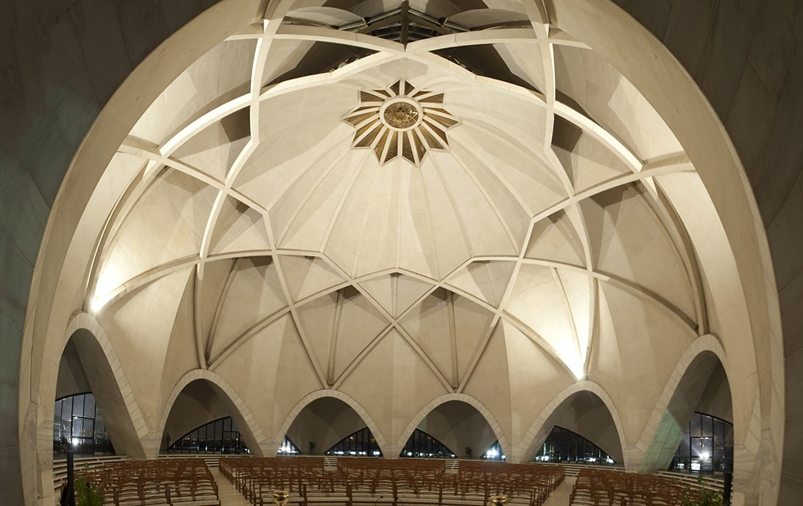
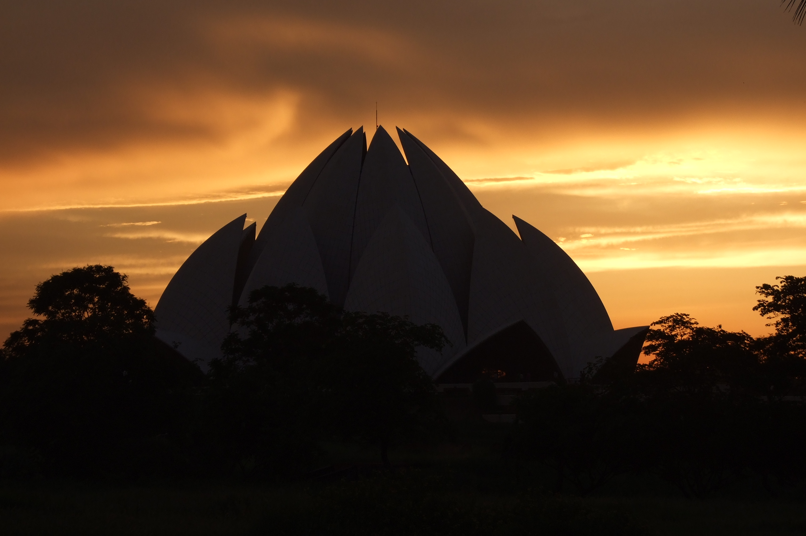
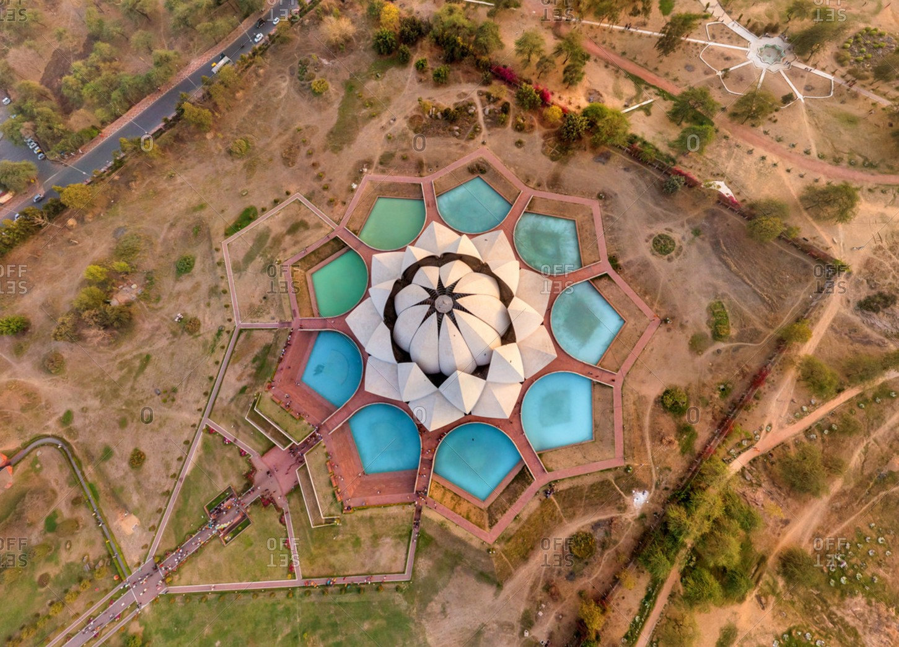

Delhi is a city full of hidden gems and unique experiences. We invite you to discover the best places to visit in Delhi with our expert recommendations.
The Lotus Temple, located in South Delhi, is easily accessible by metro or taxi. The nearest metro station is Kalkaji Mandir on the violet line. Visitors should plan to arrive early to avoid crowds and enjoy the serene atmosphere. Photography is allowed but not inside the temple, and visitors are asked to be respectful and maintain silence. Appropriate dress code is required, covering shoulders and knees. The temple also has a shoe-check facility, so visitors should plan to remove their shoes before entering. The Lotus Temple also offers a small museum and information center on the Bahá'í faith. Outside the temple, visitors can enjoy the beautifully landscaped gardens, fountains, and pools. The temple complex also includes a cafeteria serving vegetarian food. Overall, the Lotus Temple is a must-visit destination in Delhi for anyone interested in architecture, spirituality, and peaceful places.
DELHI TOURIST SPOT INFO
- SPOT NAME : LOTUS TEMPLE
- Language : Hindi,English,Urdu
- Visiting Time : Tuesday to Sunday, 9:00 AM to 7:00 PM (Closed on Mondays)
- Address : Lotus Temple Rd, Bahapur, Shambhu Dayal Bagh, Kalkaji, New Delhi, Delhi 110019
- Size : The Lotus Temple complex covers an area of about 26 acres.
DESCRIPTION
The Lotus Temple is a Bahá'í House of Worship in South Delhi, famous for its lotus-inspired architecture. Completed in 1986, it's a major landmark and tourist attraction. The temple's unique design creates a peaceful atmosphere inside with natural light filtering through the petals. Visitors can enter the temple to meditate, pray, or learn about the Bahá'í faith. The surrounding gardens and pools add to the serene ambiance. A must-visit for anyone interested in architecture, spirituality, or peaceful places in Delhi.
Visuals
   Some Useful LinksDownloadable maps
Must-read articles
Deals and Discounts